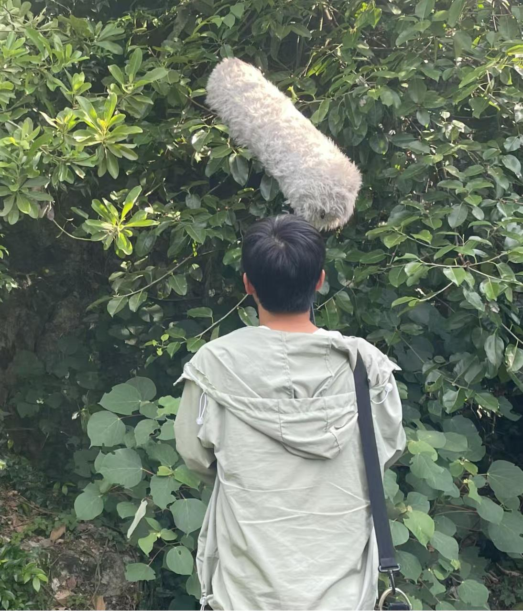
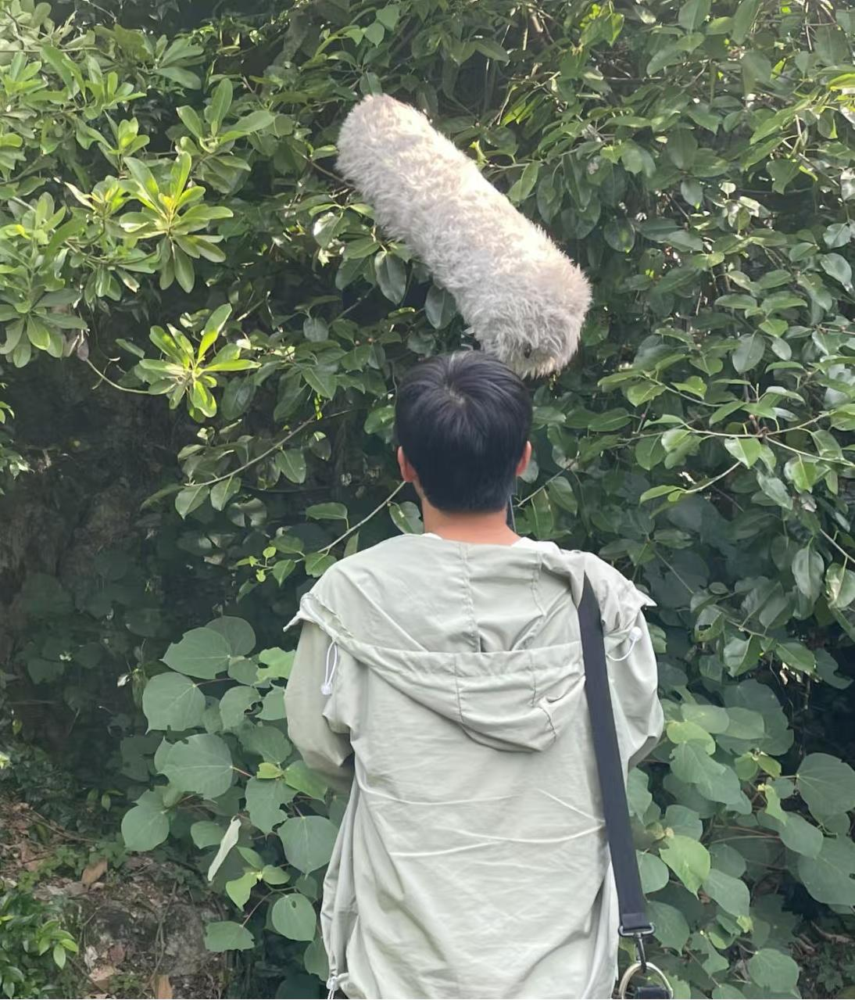

随着全球野生动物栖息地的减少和非法猎杀行为的增加，越来越多的物种面临灭绝的威胁。白头叶猴作为中国特有的极度濒危物种，其保护和研究工作面临着诸多挑战。由于其栖息地主要位于广西西南部崇左、扶绥和宁明三县交界的石灰岩地带，地形复杂且栖息地严重碎片化，传统的监测方法难以有效实施。白头叶猴对外界变化极为敏感，常保持高度警觉并迅速逃离，这使得近距离观察和追踪变得异常困难。此外，它们通常在黎明和黄昏时分活动，活动范围较大，进一步增加了研究的难度。传统的追踪装置或无线电项圈不仅成本高昂，还可能对动物造成伤害，因此迫切需要一种高效、非侵入式的监测方法。
声音交流是白头叶猴社会互动的重要方式，用于维持群体关系、保卫领地、吸引配偶以及躲避捕食者。声音的显著性、灵活性和远距离传播的潜力使其成为白头叶猴最有效的交流方式之一。然而，在自然环境中，白头叶猴的声音往往受到背景噪声的干扰，如风声、水流声和其他动物的叫声，这给声音数据的采集和分析带来了巨大挑战。为了更准确地识别和分析白头叶猴的声音特征，必须对采集到的声音数据进行降噪处理，以去除无关的环境噪声，保留目标声音的有效信息。
深度学习算法在声音信号处理领域展现出了强大的潜力，尤其是在降噪任务中。通过构建深度神经网络模型，可以从复杂的背景噪声中提取出目标声音的特征，并实现高效降噪。具体而言，深度学习模型可以通过大量的训练数据学习声音信号的特征分布，从而在输入含噪声音信号时，自动分离出目标声音和背景噪声。这种方法不仅能够显著提高声音数据的质量，还可以为后续的白头叶猴行为分析和种群监测提供可靠的数据支持。
我们的项目旨在通过基于深度学习的降噪处理技术为白头叶猴的保护和研究提供了一种创新且高效的手段。通过降噪处理，可以更清晰地捕捉和分析白头叶猴的声音特征，进而了解其行为模式、种群动态和栖息地变化。这种方法不仅降低了传统监测方法对动物的干扰，还能够实现长时间、大范围的连续监测，为制定科学有效的保护策略提供了重要依据
 
